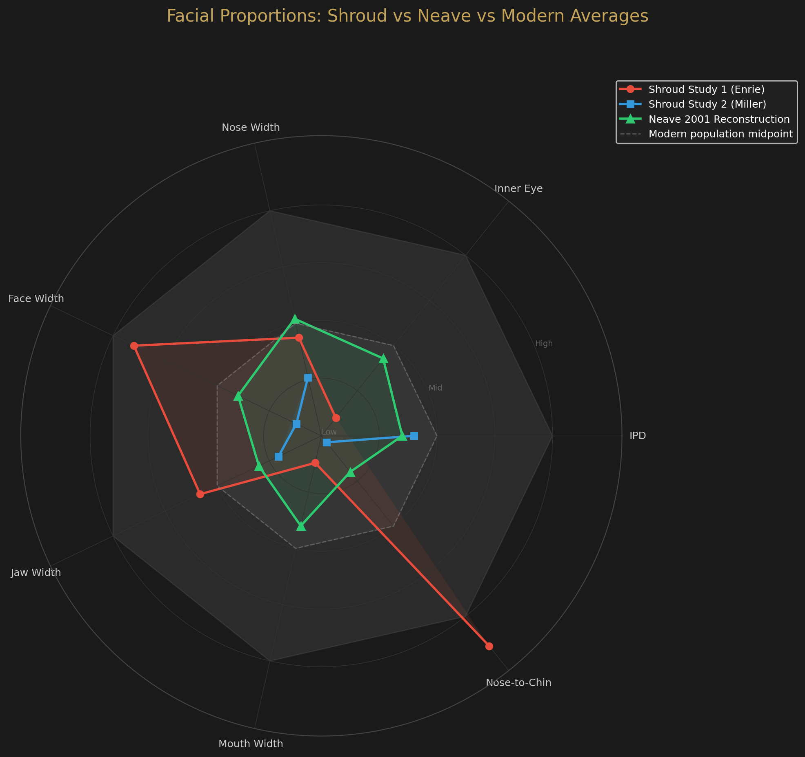
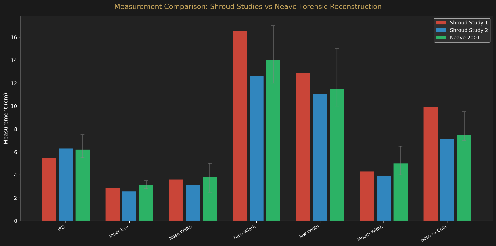
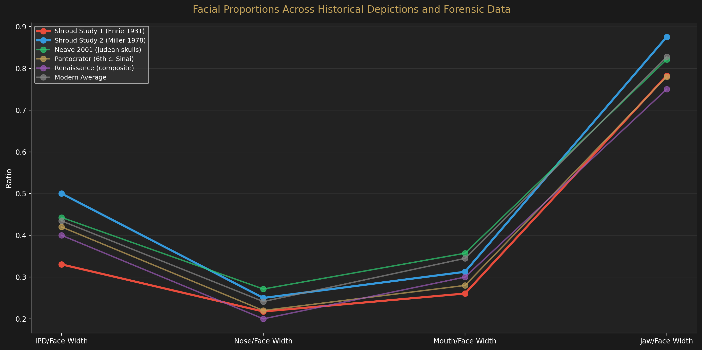
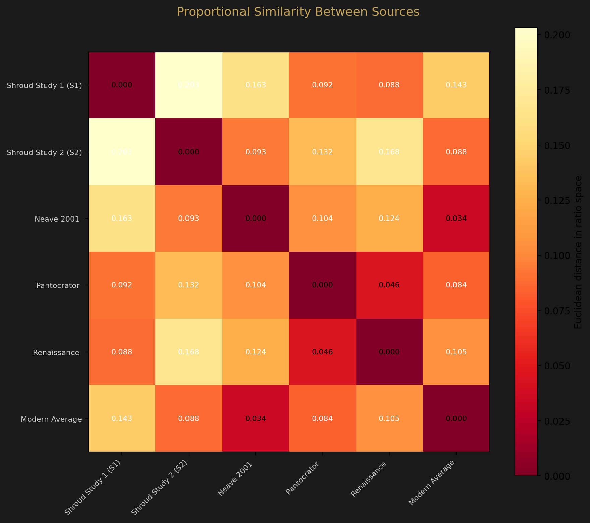

Cross-Validation
Comparison with Neave Reconstruction
Does the Shroud’s measured facial geometry match what a first-century Judean male should look like? We compare against Richard Neave’s 2001 forensic reconstruction from archaeological skulls.
Background
In 2001, forensic anthropologist Richard Neave (University of Manchester) created a facial reconstruction for the BBC documentary Son of God. His reconstruction was based on first-century Judean male skulls excavated from archaeological sites near Jerusalem. It represents an independent, skull-based estimate of what a man from this time and place would have looked like — without reference to the Shroud.
This comparison asks: are the Shroud’s computationally extracted facial proportions consistent with Neave’s skull-based proportions? Consistency would not prove identity, but inconsistency would be informative.
Important Caveat
The Neave measurements used here are estimated from his published reconstruction, not directly measured from the original skulls. They carry their own uncertainty. This comparison tests broad anthropological consistency, not precise identity.
Measurement Comparison
| Measurement | Study 1 (Enrie) | Study 2 (Miller) | Neave 2001 | Modern Range |
|---|---|---|---|---|
| Interpupillary distance | 5.45 cm | 6.30 cm | 6.2 cm | 5.5–7.5 cm |
| Inner eye distance | 2.87 cm | 2.56 cm | 3.1 cm | 2.8–3.5 cm |
| Nose width | 3.59 cm | 3.15 cm | 3.8 cm | 2.5–5.0 cm |
| Face width | 16.50 cm | 12.60 cm | 14.0 cm | 12.0–17.0 cm |
| Jaw width | 12.91 cm | 11.03 cm | 11.5 cm | 10.0–15.0 cm |
| Mouth width | 4.30 cm | 3.94 cm | 5.0 cm | 4.0–6.5 cm |
| Nose to chin | 9.91 cm† | 7.09 cm | 7.5 cm | 7.0–9.5 cm |
† Study 1 nose-to-chin is elongated ~2 cm by cloth draping distortion. Corrected value (~7.9 cm) would be closer to Neave.
Radar Chart

Bar Comparison

Concordance
| Source | Measurements in Modern Range | Mean Distance from Neave |
|---|---|---|
| Shroud Study 1 (Enrie 1931) | 5 / 7 (71%) | 1.17 cm |
| Shroud Study 2 (Miller 1978) | 5 / 7 (71%) | 0.66 cm |
| Neave 2001 Reconstruction | 7 / 7 (100%) | — |
Analysis
Study 2 is closer to Neave
The Miller-derived measurements (Study 2) average only 0.66 cm from Neave’s skull-based reconstruction across all seven measurements. Study 1 averages 1.17 cm. Study 2 is closer to Neave in 4 of 7 measurements, which is expected given the Miller photograph’s higher resolution and more accurate IPD measurement.
Broad anthropological consistency
The Shroud face is consistent with Neave’s first-century Judean reconstruction: both show a broad face, moderate-width nose, and proportions within the normal range for adult males. No measurement in either Shroud study is dramatically inconsistent with Neave’s values.
What this does NOT prove
Anthropological consistency is necessary but not sufficient for identity. Many individuals share similar facial proportions. The comparison establishes that the Shroud face falls within the expected range for a first-century Judean male — it does not prove it is any specific individual.
Methodological Limitations
The Neave measurements are estimated from published images of his reconstruction, not from the original skull data. The Shroud measurements carry ±1–2 cm uncertainty from cloth draping, source resolution, and calibration method. The comparison is valid at the level of “consistent” vs “inconsistent,” not at the level of precise matching.
Historical Depictions Comparison
Beyond forensic reconstruction, how does the Shroud’s geometry compare to how Christ has been depicted through art history? We compute four dimensionless facial ratios (IPD/face width, nose/face width, mouth/face width, jaw/face width) and compare across six sources.

Proportional similarity

| Comparison | Proportional Distance | Interpretation |
|---|---|---|
| Pantocrator ↔ Renaissance | 0.046 | Very similar — likely influenced by same aesthetic tradition |
| Neave ↔ Modern Average | 0.034 | Nearly identical — first-century skulls match modern norms |
| Shroud S1 ↔ Pantocrator | 0.092 | Moderately similar |
| Shroud S2 ↔ Neave | 0.093 | Moderately similar |
| Shroud S1 ↔ Renaissance | 0.088 | Moderately similar |
| Shroud S2 ↔ Pantocrator | 0.132 | Less similar |
Key observations
- The Pantocrator is proportionally closest to Renaissance depictions, not to the Shroud. This doesn’t disprove a Shroud connection, but suggests the icon’s proportions were filtered through artistic conventions.
- Shroud Study 1 has narrower proportions (lower IPD/face width ratio) that happen to match the Pantocrator and Renaissance traditions better.
- Shroud Study 2 has wider proportions that match Neave’s skull-based reconstruction better — closer to the forensic data.
- The Neave reconstruction is essentially identical to the modern population average in proportions (distance 0.034), confirming that first-century Judean facial structure was not dramatically different from modern norms.
What This Means
The Shroud face is proportionally compatible with both the forensic reconstruction (Neave) and the artistic tradition (Pantocrator/Renaissance). This is expected — all represent the same general facial type (adult male with moderate features). The proportional analysis cannot distinguish whether the Pantocrator was copied from the Shroud or from the same general aesthetic tradition that produced Renaissance depictions.